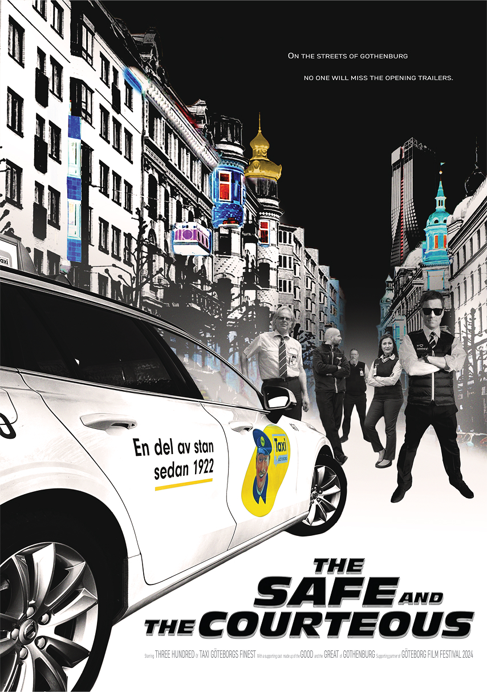
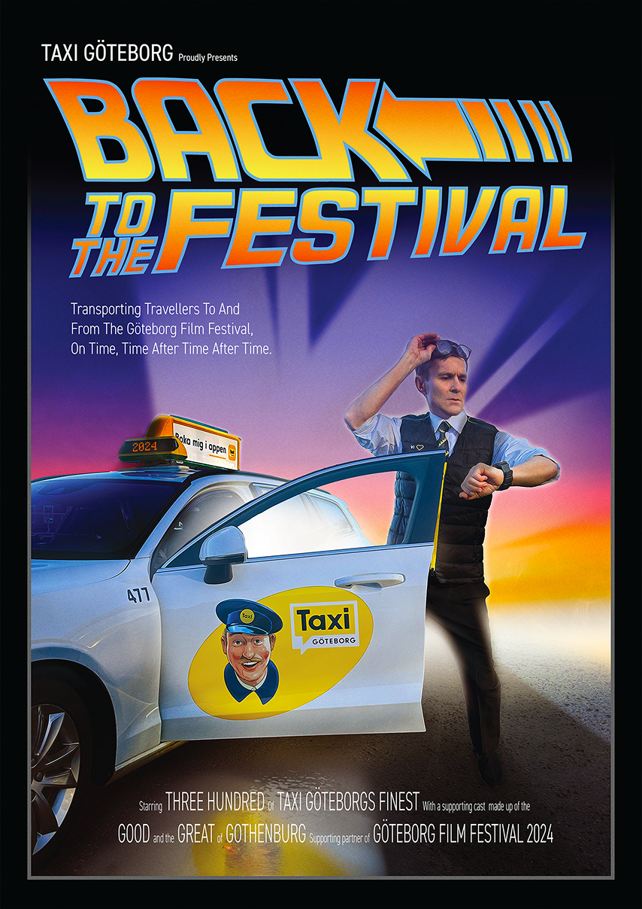

Taxi Göteborg was the first brand I interacted with upon stepping out on to Swedish soil in 2019. They picked us up outside the airport on a freezing January morning and wisely delivered us to our new home in Gothenburg. Since that day I longed to work with this iconic brand and help them cement their position as 'A Port Of The City'. Taxi Göteborg are to Gothenburg what the Black Cab is to London.

